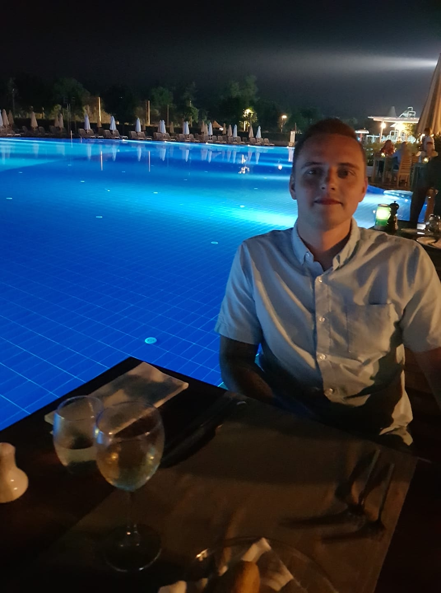

Inleiding
Doorzetter, ambitieus, initiatief, brede interesse, harde werker, bescheiden, behoefte aan ontwikkeling.
In mijn huidige functie haal ik voldoening uit leidinggeven, nadenken over bedrijfsprocessen en het ontwikkelen van medewerkers.
Dit gecombineerd met een bedrijfskundige vooropleiding en passie voor IT is voor mij de aanleiding geweest om te starten met de WO Master BPMIT.
Data analytics, programmeren, ethisch hacken; een kleine greep uit IT thema’s die mij fascineren.
Deze thema’s, mijn analytisch inzicht en denkvermogen lopen niet in verhouding met mijn huidige functie. Ondanks dat ik daar nog veel plezier uit haal ligt mijn toekomst er niet.
Met een blik gericht op bedrijfskundige processen en IT toepassingen, werk en studeer ik gedreven. Daarnaast ben ik als vader een bevlogen familieman, haal ik energie uit nieuwe vaardigheden leren en ben ik een fanatieke sporter en motivator.
